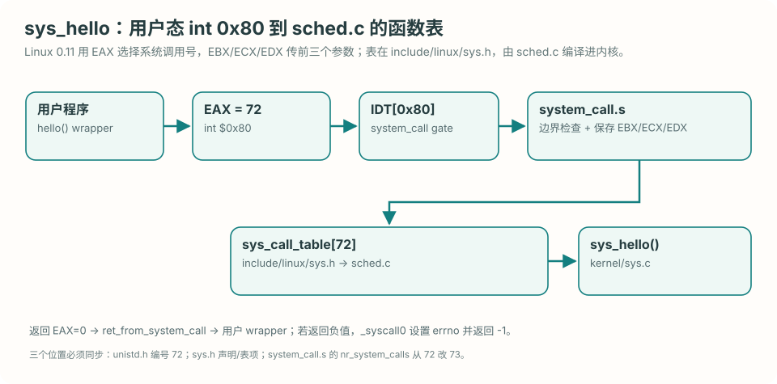
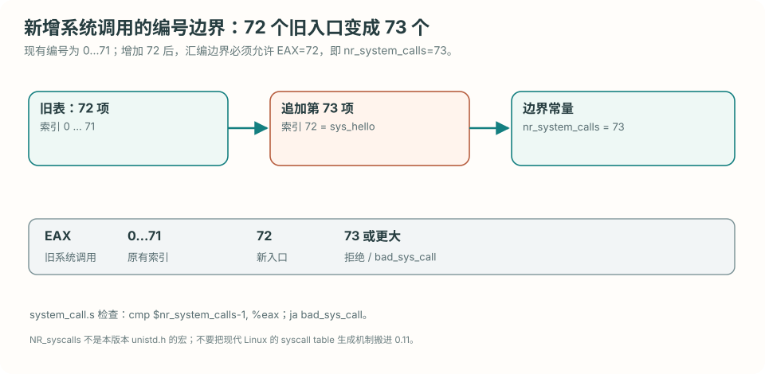

新增 sys_hello：从用户态 int 0x80 到内核函数表
在 Linux 0.11 中增加一个无参数 sys_hello 系统调用，准确修改 unistd.h、include/linux/sys.h、kernel/sys.c 和 system_call.s，并用 ZMAGIC a.out 用户程序验证 ABI。
syscall ABI · ZMAGIC · EAX=72系统调用不是只写一个 C 函数
用户程序调用 hello() 时，库包装函数必须把系统调用号放入 EAX，再执行 int $0x80。CPU 通过 IDT 的 0x80 system gate 进入内核汇编入口；汇编验证调用号范围、保存寄存器和段寄存器，再按 EAX 索引 sys_call_table[] 调用 C 函数。函数返回值放回 EAX，用户态包装函数把负值转换为 errno 并返回 -1。
因此一个完整的新系统调用至少要同步四个位置：用户 ABI 编号、内核函数声明/表项、内核 C 实现、汇编允许的调用号上界。漏改任意一个位置，都可能导致用户程序触发旧入口、越界被拒绝，或内核无法链接到函数。


先核对原版系统调用 ABI 和编号边界
include/unistd.h 在 #ifdef __LIBRARY__ 内定义 __NR_setup=0 到 __NR_setregid=71，并提供 _syscall0、_syscall1 等内联汇编包装宏。0.11 这份头文件没有现代 Linux 的 NR_syscalls 自动生成机制；用户态调用号需要显式增加。
system_call.s 定义 nr_system_calls=72，并在入口处执行：
nr_system_calls = 72
_system_call:
cmpl $nr_system_calls-1,%eax
ja bad_sys_call
...
call _sys_call_table(,%eax,4)因此当前合法索引是 0–71。新增编号 72 后，总数必须设置为 73，这样 cmp $72,%eax 才允许 EAX=72。若只把 __NR_hello 加到用户头文件，却忘记改汇编边界，新调用会走 bad_sys_call 并返回 -1。
为什么新增调用号是 72，但 nr_system_calls 要改成 73？（展开核对）
编号从 0 开始。原有 72 个入口覆盖 0–71；新增索引 72 后共有 73 项。汇编检查 EAX 大于 nr_system_calls−1，因此必须把总项数设为 73。
系统调用表在 include/linux/sys.h，而不是汇编文件
include/linux/sys.h 包含内核系统调用函数声明和 fn_ptr sys_call_table[] 初始化表。kernel/sched.c 明确包含 <linux/sys.h>，因此该数组随 sched.o 编译进内核；system_call.s 只通过符号 _sys_call_table 做索引调用，并不定义函数表。
现有表最后两个项是 sys_setreuid 和 sys_setregid，对应 70 和 71。新增时必须把声明和函数指针按相同顺序追加；只增加声明而不增加数组项，或数组项位置与 __NR_hello 不一致，都会产生 ABI 错配。
/* existing declarations ... */
extern int sys_setreuid();
extern int sys_setregid();
extern int sys_hello();
fn_ptr sys_call_table[] = {
/* existing entries: index 0 through 71 */
sys_setreuid, sys_setregid,
sys_hello /* index 72 */
};这是 Linux 0.11 的静态函数指针数组，不是现代内核通过 SYSCALL_DEFINE、架构生成头文件和 linker section 生成的调用表。
实现一个无参数 sys_hello，避免虚构用户指针 API
最小可验证实现不需要接收用户态字符串，也不需要伪造现代 copy_from_user()。在 kernel/sys.c 中加入一个无参数函数：调用本版已有的 printk() 向控制台打印固定文本，然后返回 0。函数声明与表项已经在上一节加入。
int sys_hello(void)
{
printk("Hello from Linux 0.11 sys_hello()!\n\r");
return 0;
}这里故意使用无参数 ABI：内核不会解引用用户态指针，因此本实验聚焦系统调用入口和返回值。如果下一步要传入字符串，必须再研究 0.11 的 FS 段访问、get_fs_byte()、边界和异常处理；不能直接复制现代 copy_from_user() 教程代码。
用户态声明：在 __LIBRARY__ 区域增加编号
在 include/unistd.h 的 __LIBRARY__ 宏区域、__NR_setregid 71 后增加 #define __NR_hello 72。这使 _syscall0 宏能够展开为一个名为 hello() 的包装函数。注意 __LIBRARY__ 必须在 include 之前定义，否则系统调用编号和包装宏不会暴露。
#define __LIBRARY__
#include <unistd.h>
#include <stdio.h>
_syscall0(int,hello)
int main(void)
{
int rc = hello();
printf("hello() returned %d\n", rc);
return rc < 0;
}上面的用户程序是展示 ABI 的独立示例；实际工程中把 __NR_hello 合并到头文件一次即可，不要在项目头文件和测试程序中重复定义同一个宏。若直接使用内核树的 unistd.h，先将宏追加在原有 71 后，再编译测试程序。
修改 system_call.s：同步扩大允许范围
把 kernel/system_call.s 中 nr_system_calls = 72 改为 nr_system_calls = 73。这是总项数而不是最后一个编号；汇编入口的 cmp $nr_system_calls-1,%eax 因而允许 0–72。其他寄存器保存和函数表调用逻辑不需要为无参数 sys_hello 增加新的分支。
/* before */
nr_system_calls = 72
/* after */
nr_system_calls = 73
/* unchanged dispatch */
cmpl $nr_system_calls-1,%eax
ja bad_sys_call
call _sys_call_table(,%eax,4)_syscall0 只把编号放入 EAX，执行 int $0x80。系统调用返回负数时，包装宏执行 errno=-__res 并返回 -1；本例成功返回 0，因此用户态 hello() 也返回 0。
依赖关系与构建顺序：make dep 并不是系统调用表生成器
Linux 0.11 根目录和 kernel 子目录都有 make dep 目标，它通过预处理器的 -M 重新生成 Makefile 尾部的依赖清单。现有 kernel/Makefile 已明确记录 sched.o 依赖 ../include/linux/sys.h；因此修改这个已经存在的头文件，正常 make 会触发 sched.o 重编译。只有新增/改变 include 关系、依赖清单过期时，才需要重新运行 make dep。它不会自动修改系统调用编号、声明或函数表。
# 修改 include 关系时更新依赖清单
make dep
# 为避免混用旧对象，进行一次完整构建
make clean
make dep
make
# 检查函数表与调用号符号
grep -n 'sys_hello\|sys_setregid' include/linux/sys.h
grep -n '__NR_hello' include/unistd.h
grep -n 'nr_system_calls' kernel/system_call.s构建内核与构建用户程序是两件事。根目录 make Image 生成 bootsect/setup/system 的启动镜像，不会自动把用户态 hello 安装进 root filesystem。用户程序必须使用与 0.11 兼容的 i386 a.out 工具链，链接为内核可执行的 ZMAGIC 格式，再复制到启动时挂载的 root filesystem。
用户程序必须满足 0.11 的 ZMAGIC a.out 装载条件
fs/exec.c 的 do_execve() 检查 N_MAGIC(ex)==ZMAGIC，拒绝 text/data relocation，并要求 N_TXTOFF(ex)==BLOCK_SIZE。在这个文件系统中 BLOCK_SIZE=1024，所以用户程序文本偏移必须是 1024 字节。现代主机 GCC 默认生成 ELF，不能因为 CPU 是 i386 就认为 0.11 的 exec 能直接加载它。
if (N_MAGIC(ex) != ZMAGIC ||
ex.a_trsize || ex.a_drsize ||
ex.a_text+ex.a_data+ex.a_bss > 0x3000000 ||
inode->i_size < ex.a_text+ex.a_data+ex.a_syms+N_TXTOFF(ex)) {
retval = -ENOEXEC;
goto exec_error2;
}
if (N_TXTOFF(ex) != BLOCK_SIZE) {
retval = -ENOEXEC;
goto exec_error2;
}因此请使用该历史环境支持的 a.out 编译/链接工具链（或已验证的兼容工具），检查产物头部 magic 和文本偏移，再安装到 rootfs。不能用现代 gcc -static -o hello 的默认 ELF 输出作为成功证据。
端到端验证：内核打印 + 用户态返回值
- 编译内核后检查链接映射，确认
sys_hello已进入sys_call_table，并且nr_system_calls=73。 - 用兼容的 i386 a.out 工具链构建测试程序，确认它是 ZMAGIC 且
N_TXTOFF=1024。 - 将
hello安装到与ROOT_DEV匹配的 root filesystem，启动新 Image。 - 在 0.11 shell 运行
hello：控制台应出现内核打印文本，用户程序显示返回值 0。 - 若出现
ENOEXEC，先检查 a.out magic/offset；若返回 -1 且无打印，检查编号 72、表项顺序和nr_system_calls。
grep -n 'sys_hello\|sys_call_table' include/linux/sys.h
grep -n 'sys_hello' kernel/sys.c
grep -n '__NR_hello' include/unistd.h
grep -n 'nr_system_calls\|sys_call_table' kernel/system_call.s
grep -n 'N_MAGIC(ex).*ZMAGIC\|N_TXTOFF(ex)' fs/exec.c该实验的通过标准是“内核函数可被编号 72 正确分派，用户 wrapper 收到 0，且 ZMAGIC 程序能被 exec 装载”。本次仓库重构不会谎称已经在当前 CI 里运行了历史 GCC 工具链、修改磁盘镜像并完成 QEMU 实测。
原始源码依据
- include/unistd.h：0–71 号调用和 _syscall0 wrapper。
- include/linux/sys.h：sys_call_table 声明与 72 项函数表。
- kernel/sched.c：包含 linux/sys.h，编译系统调用表。
- kernel/system_call.s：nr_system_calls=72、EAX 边界和函数表间接调用。
- kernel/sys.c：可加入 sys_hello 的内核系统调用实现。
- fs/exec.c：ZMAGIC、N_TXTOFF=1024 与 a.out 校验。
- kernel/Makefile / Makefile：dep 目标和实际对象依赖。
下一批剩余 26–28 章可以围绕网络栈/综合调试或仓库目录中实际剩余主题继续；完成后再做一次全站交叉审计和完整运行环境复现。